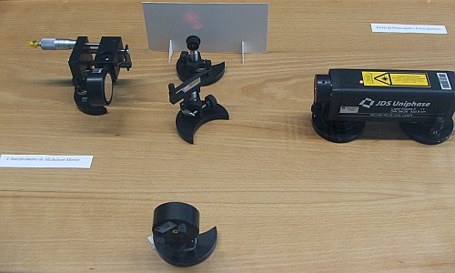

Interferómetro de Michelson
No fim do século XIX, após o trabalho de Maxwell na teoria electromagnética, ficou estabelecido que a luz é uma onda electromagnética. Nomeadamente, uma combinação de campos eléctrico e magnético variáveis, de forma que a variação de cada um deles induz o outro, produzindo campos que podem perdurar mesmo na ausência de cargas ou correntes eléctricas.
Um dos grandes éxitos da teoria electromagnética de Maxwell foi conseguir reproduzir o valor medido da velocidade da luz, a partir dos valores das constantes eléctricas e magnéticas medidas em experiências de electromagnetismo.
Mas como os campos eléctrico e magnético não são iguais em diferentes referenciais em movimento, a velocidade da luz não podia ser a mesma em todos os referenciais. Também parece óbvio que se nos deslocarmos em relação ao meio em que uma onda se propaga, observaremos uma velocidade de propagação diferente; assim, a velocidade de uma onda é diferente em diferentes referenciais.
Os físicos do século XIX acreditavam na existência de um espaço absoluto (o hipotético éter) onde as leis de Maxwell são válidas. A velocidade constante obtida a partir das equações de Maxwell seria a velocidade de propagação da luz nesse espaço absoluto. A medição da velocidade da luz em diferentes referenciais deveria permitir determinar a velocidade absoluta desses referenciais.
Muitas experiências foram feitas, usando luz proveniente das estrelas ou luz produzida por fontes na Terra. Todas essas experiências falhavam no detecção de qualquer modificação da velocidade da luz; não era possível observar diferenças na velocidade da luz quando a fonte e/ou o observador estavam em movimento. Por cada nova experiência que fracassava, aparecia uma nova teoria que admitia que o éter era arrastado parcialmente pela fonte ou pelo observador em movimento. O arraste do éter não parecia seguir nenhuma regra simples que pudesse ser determinada sem ambiguidade, mas parecia apenas um artifício que precisava ser ajustado para cada experiência.
A actividade de investigação intensa nessa área levou Michelson a conceber vários dispositivos experimentais para detectar variações na velocidade da luz num referencial em movimento. A evolução desses dispositivos levou-o ao desenvolvimento do interferómetro designado de Michelson, onde é possível eliminar de forma mais clara qualquer efeito do arraste do éter.
No interferómetro de Michelson, um feixe de luz é separado em dois feixes perpendiculares, por meio de um espelho semitransparente que reflecte parte da luz e deixa passar outra parte. Os dois feixes, provenientes da mesma fonte, são reflectidos por dois espelhos fazendo com que regressem novamente ao espelho semitransparente, misturando-se novamente para produzir um padrão de interferência que pode ser observado.
A distância percorrida pelos dois feixes pode ser ajustada com precisão. Uma pequena variação no tempo que demora um dos feixes a percorrer o seu percurso, pode ser observada através da deslocação do padrão de interferência. Se a velocidade da luz fosse diferente em diferentes direcções (devido ao movimento da Terra), quando se rodasse o interferómetro o padrão de interferência deveria deslocar-se.
Michelson e Morley realizaram essa experiência sem observar nenhum efeito da translação da Terra na velocidade da luz. O que observaram foi que a velocidade da luz era a mesma em todas as direcções. Lorenz explicava esse resultado admitindo uma contracção do éter no sentido do movimento da Terra. Mas não foi possível encontrar uma causa e um mecanismo paussíveis para essa contracção.
Em 1905, Einstein publica a sua teoria da relatividade, segundo a qual a velocidade da luz deverá ser igual em qualquer referencial. Uma das consequências desse princípio é que tempo e distância não são grandezas absolutas, como aponta o nosso sentido comum, mas podem ter valores diferentes para diferentes observadores. Não existe nenhum espaço absoluto nem nenhum éter.
Partindo de apenas dois princípios simples: as leis da física são as mesmas para qualquer observador e a velocidade da luz e constante, Einstein obteve as mesmas equações de Lorenz. Mas a contracção da distância e a dilatação do tempo são efeitos relativistas reais, com muitas consequências que já têm sido observadas experimentalmente, e não apenas uma contracção do éter como acreditava Lorenz.